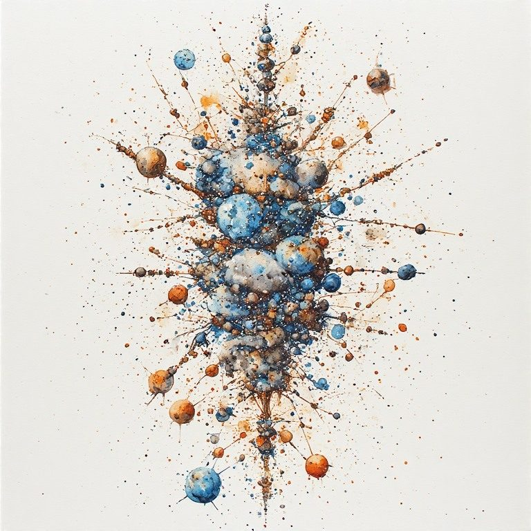

Part One: The Eleventh Idea
← How to Use This Workbook · Radical Immanence Collection · Part Two: The Sediment →
The Here Is Enough philosophy rests on twelve ideas. Eleven of them describe what you are in the present moment: multiple, constructed, grieving, unfinished, plural, and here. The twelfth was always implied but never named.
It is this: you are a crossing point.
A crossing point is where two lines meet. The horizontal line is your life as you normally experience it: your relationships, your identity, the present moment spreading in all directions. The vertical line is time as transmission: everything deposited in you by the people and forces that came before, and everything you are depositing right now into what comes after.
You are not on the horizontal line. You are not on the vertical line. You are at the intersection. That is a different location than either one alone. And it changes what presence means.
The Horizontal Axis
The Here Is Enough work lives mostly on the horizontal axis. The present moment. What is here? The ordinary Wednesday. The cup of tea. The grief that is not yet named. The body carrying more than usual this morning.
That work is real and it is necessary. You cannot be in relationship with the vertical axis if you are not first present to the horizontal one. You have to be here before you can ask what here is made of.

The Vertical AxisBut here is made of something. The present moment is not free-floating. It rests on everything that accumulated to produce it. The language you are using to read these words was deposited in you over decades, by teachers and parents and books and every conversation you have ever had. The grief you carry contains grief that was not originally yours. The assumptions that feel most natural to you were built by people who had reasons to build them that way.
You are alluvial. That is a geological term for material carried by water and deposited somewhere new. The Mississippi Delta is made of soil carried from thousands of miles upstream. You are made the same way. You are a deposit of everything that came before, reshaped and re-deposited in a new place and time.
And you are also depositing. Everything you do right now is adding to the sediment. The people around you. The culture. The ground. The not-yet-born will stand on what you are forming.
The Crossing Point
The crossing point is not a burden. It is a description of what you actually are. You were always here. The vertical axis was always running through you. What changes when you name it is visibility. You can see the structure you are already inside.
And what the crossing point offers, beyond visibility, is a different kind of stability. On the horizontal axis, everything is in motion. The present shifts. Circumstances change. Relationships move. Grief arrives and does not leave. But the vertical axis, the transmission line, does not move the way the horizontal does. The ancestors are in the ground. The not-yet-born are being shaped. That process is ongoing whether you attend to it or not.
When you orient toward the crossing point, you find something that holds even when the horizontal axis is turbulent. Not transcendence. Not escape. Just the felt sense of being on a transmission line that is longer than your life. That the carrying continues. That you are part of something that does not depend entirely on how this particular Wednesday resolves.
| You are at the crossing point right now. You have always been at the crossing point. This workbook does not move you there. It makes visible the structure you are already inside. |
|---|
What do you already feel pressing up from below? What have you been carrying that did not begin with you?